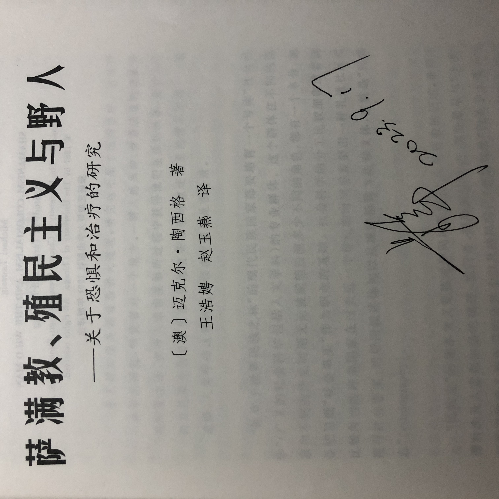
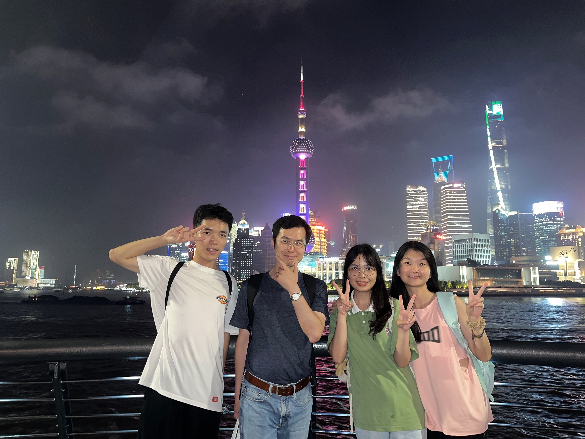
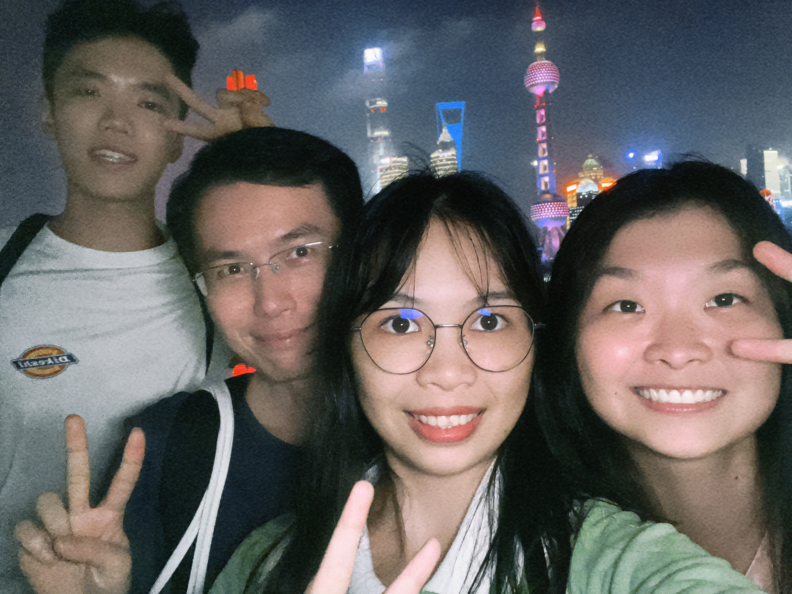

Secure in the knowledge that my parents have been respecting for and supporting my pursuit.
Fudan University
I went to Fudan University to participate in a lecture on medical anthropology with two classmates by train on 17th September, 2023.
What surprised my friends and teachers was our willingness to travel to Shanghai despite what seemed like such a short and rushed period of time from Friday to Monday.
Some people would like to regard our action as 「Special Forces Travel」. While from my own point of view, I am willing to trace any chance and possibility about growth.

This was the first time I had seen Guanghua Tower. I have seen it some times in bilibili. It still attracted me——It’s a symbolism, which means a better future……
It’s my honor to be photographed with Professor Jun Jing from Tsinghua University.

It’s a pity that I failed to have a single photo with him. Nevertheless, the sign from him enable to offset the disappointment^^.

I knew Southern theory which could be called Sociology Theory of absence from Jun Jing. When Prof.Jing asked us to write down five sociology theories, I can only recall theories from Marx, Weber, Durkheim, Parsons and Goffman. What they all have in common is that they come from European and American societies.
Pro. Jing pointed out that we were trapped in Euromaidan mainstream theory. He named it as 「The Prisoner’s Mind」. Jun Jing wanted to writed down 100 Southern sociologists’ history and he has finished at least 20 stories with some students. One of the undergraduates he taught read more than a dozen original books in order to write the entire life of a Pakistani sociologist. It sounds amazing. There is no denying that we should get the hang of some classic theory such as Marx, Durkheim and Weber’s theory, but it shouldn’t be the cause not to learn about Southern Theory.
It’s hard to say what influence such a lecture could convey to me, but I cherish it. Thanks to Liqiu Zhang who made my acquaintance in Zhejiang University. He is the intermediary between me and this lecture.
Fate? Destiny?
We have dinner together at night on 17th.

As a native of Shangahai, He took us to the Bund in Shanghai, and photographed with us.
 |
 |
|---|---|
Destiny is inexpressibly wonderful. There were 8 partners in our WeChat group without Liqiu who formed the group. In the end, my classmates and I participated in activity offline with Liqiu. We were more familiar with each other in an interactive progress.
That might be a night to remember with longing. Xinyi and Xianhui walked with me in the Bund after Liqiu left. May they liked life itself, we walked and stopped in order to photograph.
Thanks for their contributions😄. I love the picture they took for me.

Youth should run wild
I have no doubt to go to Shanghai. The main reason might be my pursuit toward growth, knowledge and the unknown.
“Imagine the world in Island.” Wang1 said. He is good at grasping life in anthropology point of view and rendering it to the world. How can we do that? More reading and more practicing. The former could be conducted any time, while the latter need some opportunities.
In the end, the person I appreciate most are my parents. They’re the ones who have been supporting me all the way and all the time. From Hangzhou to Nanjing, from Nanjing to Xiamen, and this time from Guangzhou to Shanghai, they all gave me unconditional financial support.
On the way to Shanghai, I expressed to my older cousin sister my nervous and worry about the expenses incurred by my own frequent travels during this period of time. I feared those experiences couldn’t bring equal benefit to my parents.
For example, what if I couldn’t be a boss? What if I couldn’t be a scholars? What if……
My sister told me that my parents don’t raise me for gain. More than gain, They prefer to wish me to be a well-informed person. Growing up and entering new outside world is a fantastic thing. Don’t forget to go back to accompany your family.
She comforted me.
I believe everyone would refresh this moment. Secure in the knowledge that my parents have been respecting for and supporting my pursuit:
Keep curiosity and enthusiasm for knowledge and the unknown.
Footnotes
My anthropology teacher.↩︎